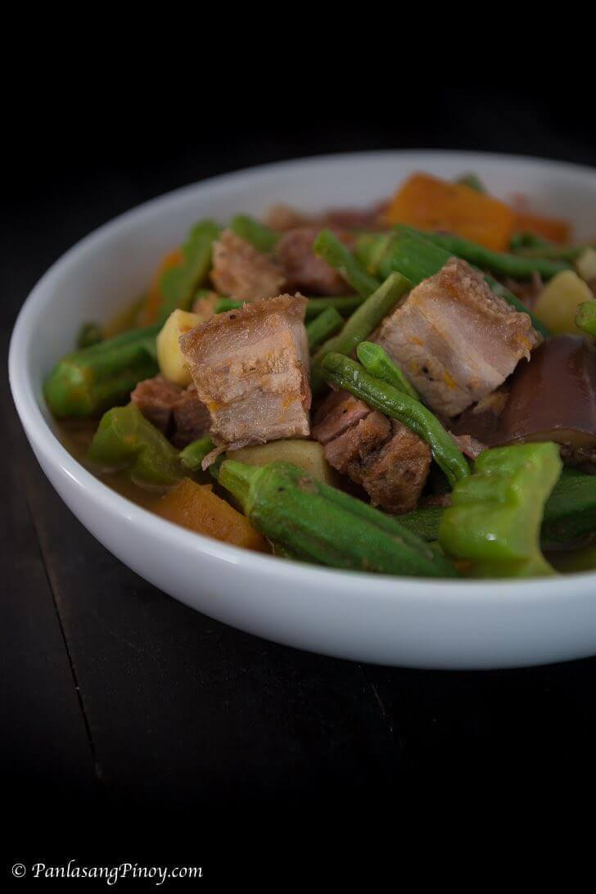

<!DOCTYPE html>
<html lang="eng">
    <meta charset="utf-8">
    <meta name="viewport" content="width=device-width, initial-scale=1.0">
    <title>Pinakbet Recipe</title>
    <link rel="stylesheet" href="../css/style.css">
</html>

<body>
    <h1 id="header">Pinakbet Recipe</h1>
    
   
    <h2 style="font-size: 21px;">This is a recipe for Pinakbet or bulanglang that makes use of deep fried crispy pork belly or lechon kawali.</h2>
    <p>Pinakbet Tagalog is a Filipino vegetable dish. It is composed of a variety of vegetables and it also has a protein component. I made use of lechon kawali or crispy deep-fried pork belly for this recipe. This recipe is a variation of the popular Pinakbet Ilocano.</p>
    <p>The difference between the two versions has something to do with the type of bagoong used. The Tagalog version makes use of bagoong alamang or shrimp paste. It is made from krill, which are small shrimp-like crustaceans found in the waters of Asia. The Ilocano version uses fermented fish or bagoong isda. Bagoong Terong and Bagoong Monamon are the common fermented fish used to cook it. Using the freshest vegetables is ideal for pinakbet. This dish is best paired with fried fish.</p>

    <h3 style="font-size: 40px;"><strong>Ingredients</strong></h3>
    <ul style="list-style-type: disc;">
        <li>1 lb lechon kawali</li>
        <li>1 piece Knorr Shrimp Cube</li>
        <li>12 pieces sitaw <italic>cut into 2 inch length</italic></li>
        <li>1/2 piece kalabasa <italic>cubed</italic></li>
        <li>12 pieces okra</li>
        <li>1 piece Chinese eggplant</li>
        <li>1 piece ampalaya</li>
        <li>1 piece kamote</li>
        <li>2 pieces tomato</li>
        <li>2 thumbs ginger</li>
        <li>1 piece onion</li>
        <li>4 cloves garlic <italic>chopped</italic></li>
        <li>2 teaspoons bagoong alamang</li>
        <li>2 1/2 cups water</li>
        <li>3 tablespoons cooking oil</li>
        <li>1/4 teaspoon ground black pepper</li>

    </ul>

    <h3 style="font-size: 40px;"><strong>Procedures</strong></h3>
    <ol>
        <li>Heat cooking oil in a pot. Saute onion and garlic. Add ginger and continue to cook until the onion softens.</li>
        <li>Add lechon kawali. Saute for 1 minute.</li>
        <li>Pour water. Let boil.</li>
        <li>Add Knorr Shrimp Cube. Cover the pot and cook in medium heat for 20 minutes.</li>
        <li>Add tomato and bagoong alamang. Stir. Cover the pot. Cook for 3 minutes.</li>
        <li>Put the kalabasa and kamote into the pot. Cook for 7 minutes./li>
        <li>Add sitaw, okra, ampalaya, and eggplant. Stir. Cover the pot and cook for 5 minutes.</li>
        <li>Season with ground black pepper and add remaing lechon kawali. Cook for 3 minutes.</li>
        <li>Transfer to a serving plate. Serve. Share and enjoy!</li>
    </ol>

    <a href="#header">Return to top</a>
</body>